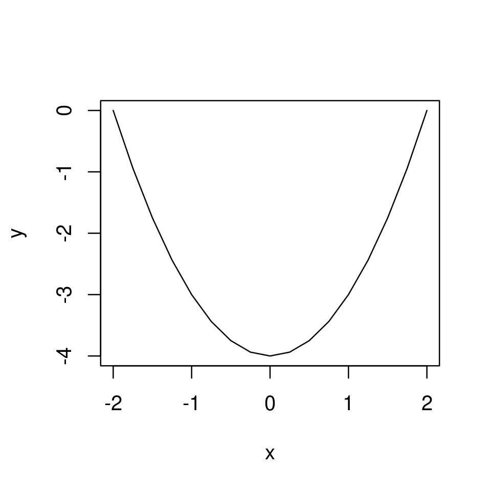
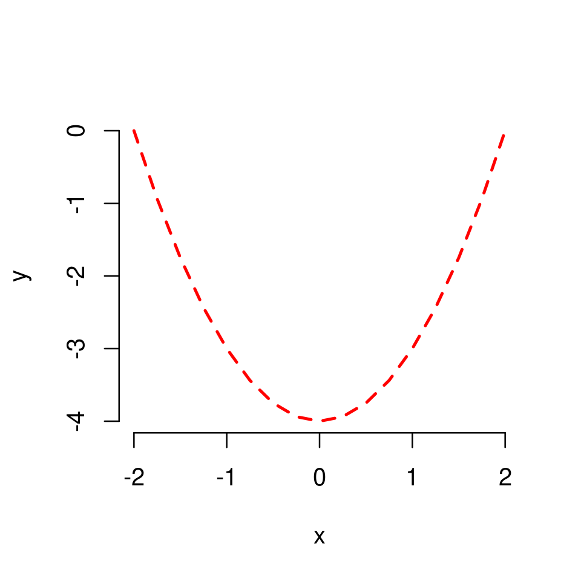

2. Plotting in R#
This chapter is a quick guide to plotting univariate functions in R. Following the discussion you should be able to plot any simple univariate function and customise your graph to look as intended.
All the examples below only use the core functionality of R (available with any installation through the in-built R graphics package) and do not require the installation of additional packages.
Tip
You may find it useful to refer to the official documentation of the R graphics package here. In addition, you can always access R’s documentation regarding any particular function by typing ? followed by the name of the function in the R command prompt. For example, ?plot will return the documentation for the plot() function.
The best way to work through the chapter is to read the discussion and then reproduce all code in your own R/RStudio installation. You can do this by copying code from a notebook cell to your R script and run the code line by line.
The chapter includes some exercises that allow you to test your understanding. It is recommended that you try these exercises on your own before choosing the option to reveal the solutions.
2.1. The basics of plotting in R#
2.1.1. The plot() function#
The most generic (but powerful) function for plotting in R is the function plot() which is invoked by typing
plot(x,y,...)
where
xis an \(x\)-coordinate (or a vector of \(x\)-coordinates)yis the corresponding \(y\)-coordinate (or corresponding vector of \(y\)-coordinates)...are additional optional arguments, discussed below.
2.1.2. Plotting a point#
We start with something very simple - plotting a point.
To plot a point simply type
plot(x,y)
where x is the x-coordinate and y the y-coordinate of the point.
For example to plot the point \(x=1,y=3\) simply type
plot(1,3)
2.1.2.1. Using optional arguments to customize the point plot#
Notice that when plot() is called without optional arguments
a plotting region appropriate for the plot is defined automatically.
In the above example the plotting region is automatically set to be \(x\in[0.6,1.4]\) and \(y\in[2,4]\).
The plotting region, however, can be set manually with the optional arguments
xlimandylim.For example,
xlim=c(0,3)will set the plotting region over the \(x\) axis to \(x\in[0,3]\)
axes labels are assigned automatically based on the “names” with which the
xandyargument were given.In the above example these were
1and2correspondingly, and this is also how the axes are labeled. Clearly, these are not good axes labels.The axes labels can be set manually with the optional arguments
xlabandylabwhich take strings as values.For example,
xlab="x"will set the \(x\)-axis label to the stringx
the graph is enclosed in a box
the box can be removed by passing
frame=FALSE
the graph (naturally) appears without a title
a title can be set by using
main="some text for the title"
the point is plotted in black.
the color of the plotted object can be set with the argument
coland can be assigned eitherby using the “name” of the color as a string (e.g.
col="blue") or;the “number” of the color (e.g.
col=2which turns out to correspond to red)
other optional arguments can be used to set the size of the point (
cex), shape of point (pch), etc.
For example,
plot(1,3,
frame=FALSE,
main="Plot of a point",
xlim=c(0,6), ylim=c(-2,10),
xlab = "x", ylab="y",
col="red",
cex=2,
pch = 17
)
plot(1,3,
frame=FALSE,
main="Plot of a point",
xlim=c(0,6), ylim=c(0,10),
xlab = "x", ylab="y",
col="blue",
cex=1,
pch = 19
)
Tip
You do not need to know all these optional arguments by heart. The important point is to understand how the plot() function works. When you need to produce a specific customized plot you can always check the rich documentation of R, as well as the many online resources, to help you customize your plot.
Exercise 2.1
Reproduce the plot below in your RStudio by setting appropriately main, xlim, ylim, xlab, ylab, col and pch.
Solution to Exercise 2.1
The plot was produced with the following code
plot(1,3,
frame=FALSE,
main="Plot of a point",
xlim=c(-2,6), ylim=c(-2,10),
xlab = "x-axis", ylab="y-axis",
col="red",
pch = 4
)
2.1.3. Plotting a set of points#
We continue with a small step forward - plotting a set of points.
To plot a set of points we again use
plot(x,y)
but now we need
xto be a vector of x-coordinates; andyto be a vector of the corresponding y-coordinatesNote: the vectors
xandyshould be of the same length (have the same number of elements)
Also recall (section Vectors in the previous chapter) that a vector of specified numbers \([x_1,x_2,...,x_n]\) can be created in R by the code c(x_1,x_2,...,x_n).
For example, to plot the four points \((x=2,y=3)\), \((x=4,y=7)\), \((x=6,y=6)\), \((x=8,y=10)\) simply type
plot(c(2,4,6,8),c(3,7,6,10))
We can again customize the look of the plot by using optional arguments.
Arguments like col, pch, cex, discussed before, work here as well. However, they can now be used in two different ways:
As before, if called with a single (scalar) value, then the property is assigned to all points.
For example,
plot(c(2,4,6,8),c(3,7,6,10), col="red")will produce a plot as the above with all points in red.However, they can now be called with a vector of values, in which case the different properties from this vector are assigned sequentially to the distinct points
For example,
plot(c(2,4,6,8),c(3,7,6,10), col=c("red", "blue", "green", "magenta"))will produce a plot with four points of different colours.
See the examples below.
plot(c(2,4,6,8),c(3,7,6,10),
col="red",
xlim=c(0,10), ylim=c(0,12),
xlab="x", ylab="y",
frame=FALSE,
main = "Plot of points"
)
plot(c(2,4,6,8),c(3,7,6,10),
col=c("red", "blue"),
pch=19,
xlim=c(0,10),
ylim=c(0,12),
xlab="x", ylab="y",
frame=FALSE,
main = "Plot of points"
)
plot(c(2,4,6,8),c(3,7,6,10),
col=1:4,
pch=1:4,
xlim=c(0,10), ylim=c(0,12),
xlab="x", ylab="y",
frame=FALSE,
main = "Plot of points"
)
Exercise 2.2
The figure below
plots the points \((x=1,y=3)\), \((x=2,y=2)\), \((x=3,y=5)\), \((x=4,y=3)\) and \((x=5,y=7)\).
on the plotting region \(x\in[0,6]\) and \(y\in[0,8]\)
in red color
as solid dots (
pch=19)and with a title.
Reproduce this plot in your RStudio.
Solution to Exercise 2.2
The plot was produced using the following code
x <- c(1,2,3,4,5)
y <- c(3,2,5,3,7)
plot(x,y,
xlim=c(0,6), ylim=c(0,8),
main="Plot of five points",
col="red",
pch=19)
2.1.4. Plotting a function of one variable#
Once we know how to plot individual points, we are conceptually ready to extend the idea to the context of graphs of functions. This turns out to be very easy in R and conceptually very similar to plotting points.
The idea is as follows:
2.1.4.1. Step 1#
Define a vector, x, of evenly spaced \(x\) coordinates over the domain on which you want to plot (recall the discussion in Vectors for creating vectors of evenly spaced numbers).
For example, to plot \(y=5x+4\) over the domain \(x\in[-5,5]\), first define the \(x\) coordinates as
x <- -5:5
2.1.4.2. Step 2#
Define a vector, y, of the corresponding \(y\) coordinates.
For example, given \(y=5x+4\) and the already defined vector x
y <- 5*x+4
Warning
When using the basic arithmetic operators +, -, *, /, ^ on vectors in the programming sense (i.e. data structures) in R, the operations are applied to each element of the vector pointwise. For example, if we have a vector defined as x <- c(1,2,3), then the outcome of the operation y <- x^2 + 2 is identical to y <- c(3,6,11) as
\(1^2+2=3\)
\(2^2+2=6\)
\(3^2+2=11\)
This allows us to easily define \(y\) coordinates given a vector of \(x\) coordinates.
However, notice that this is not how arithmetic operations for vectors are defined in mathematics. We will learn about how arithmetic operations on vectors work mathematically (and how the mathematically consistent arithmetic operations on vectors are implemented in R) later in the course. For now just keep in mind that this is one instance of the distinct meanings of the word vector in programming and mathematics.
2.1.4.3. Step 3#
Plot x against y, using the optional argument type and setting it to "l" (for line)
plot(x, y, type="l")
plot(x,y, type = "l")
And this is it.
This procedure works for every univariate function defined through expression that you might want to plot.
Note that if we had not set the type argument, it would have taken its default value (type="p") and we would have plotted a set of points on the graph of the function corresponding to the defined coordinates.
plot(x,y)
Instead, by using type="l" R suppresses the plotting of the point circles at the coordinates, but instead draws line segments connecting the coordinates.
Note that we can also use type="b" for both, which will produce a graph with the points and with the line segments connecting them.
plot(x,y, type="b")
We can further customize the way the graph looks but we will return to this later.
Now instead let’s consider plotting a more interesting function.
2.1.4.4. Example: A cubic function#
Plot \(y=x^3-4x\) for \(x\in[-3,3]\)
x <- -3:3
y <- x^3 - 4*x
plot(x,y,type="l")
Notice the problem: when we set type="l" what R actually does is draw line segments connecting the points on the graph of the function.
Previously this was not a problem because the function we plotted was a straight line. In this case, however, the function is non-linear and the graph of the function appear too jumpy.
The problem can be visualized clearly if we were to plot both the line segments and the points.
plot(x,y,type="b")
The solution is very simple - we need a finer grid for the coordinates (basically, we want the distance between elements of the vector x to be smaller).
This can be achieved by using the seq() funcion instead of the colon operator, :, and setting the distance between elements in x sufficiently small. For example, let’s make the distance between elements only 0.25 instead of 1.
x <- seq(-3, 3, by=0.25)
y <- x^3 - 4*x
plot(x,y, type="l")
And now we have a smooth (to the eye) graph.
Even though R still plots line segments between the points, the number of points on the graph plotted is sufficiently large that to the eye the graph appears smooth. This can be visualized by plotting both the points and the lines as before.
plot(x,y, type="b")
Note
At this stage, this might look like cheating. Surely, if we magnify the image sufficiently what we will see is a set of connected straight line segments rather than a proper curve. While this is true, this is the case with even the most sophisticated program for computer graphics. In maths we are accustomed with the idea that in any interval there are infinitely many real numbers and therefore if we were to plot “properly” we could have a “perfect” curve and as much as we magnify the image we won’t see segments connecting points. However, the notion of “infinitely” many points is not something with which computers can deal with. All computer graphics is based on finite numbers of points and segments.
Enough philosophy. The important point is that in exactly the same way you can plot any univariate function you like.
Exercise 2.3
The graph below plots the function \(y=x^2-4\) for \(x\in[-2,2]\).
Reproduce this graph in your RStudio.
Solution to Exercise 2.3
The plot was produced with the following code
x <- seq(-2,2,by=0.25)
y <- x^2 - 4
plot(x,y,type="l")
2.2. Customizing the look of a simple graph#
2.2.1. Using optional arguments#
As in Using optional arguments to customize the point plot we can use optional arguments to customize the appearance of the line plot
Optional arguments, as before, include
xlimandylimfor setting the plotting regionalthough this is usually unnecessary as the default plotting region is typically especially appropriate for showing the graph of the particular function on the specified domain.
xlabandylabfor setting the axes labels.colfor setting the colour of the line.frameto enable/disable to box.
When plotting lines/curves as here we can additionally use
lwdto set the width of the plotted line. Default islwd=1.ltyto set the type of the plotted line.the default is
lty=1or equivalentlylty="solid", producing a solid linelty=2orlty="dashed"produces a dashed linelty=3orlty="dotted"produces a dotted lineetc
x <- seq(-3, 3, by=0.25)
y <- x^3 - 4*x
plot(x,y, type="l",
main = "Plot of a function",
frame = FALSE,
lwd=2,
lty="dashed",
col="magenta")
If we use type=b plotting both lines and points, we can also set the graphical properties of the points with the familiar cex, pch, etc arguments.
plot(x,y, type="b",
main = "Plot of a function",
frame = FALSE,
lwd=2,
lty="solid",
col="magenta",
pch=3,
cex=0.5)
Exercise 2.4
Given the graph of \(y=x^2-4\) for \(x\in[-2,2]\) you plotted in Exercise 2.3, set graphical parameters appropriately to reproduce the plot below.
Solution to Exercise 2.4
The plot was produced with the following code
x <- seq(-2,2,by=0.25)
y <- x^2 - 4
plot(x,y,type="l",
frame=FALSE,
col="red",
lty="dashed",
lwd=2)
2.2.2. Using LaTeX for labels and titles#
In some cases we may want to add mathematical text to our graphs, e.g. in titles, labels, text annotations, etc.
However, by default, all text objects under the default functionality of graphics are set and visualized as strings.
For example, if we add a title “Plot of x^3-4x” to the graph, the title string will be typeset as below.
x <- seq(-3, 3, by=0.25)
y <- x^3 - 4*x
plot(x,y, type="l",
main = "Plot of x^3 - 4x")
By using the additional R package latex2exp we can add mathematical text to our graphs.
To install and load the package, type
install.packages("latex2exp")
library(latex2exp)
Then, to set any text object use the following syntax
TeX(r"(YOUR TEXT IN LATEX)")
where YOUR TEXT IN LATEX is anything typed in LaTeX. Note that the string is enclosed in parentheses and brackets and preceded by the letter r.
plot(x,y, type="l",
main = TeX(r"(Plot of $x^3 - 4x$)")
)
2.2.3. Adding additional plots to the same graph#
Once we have called plot() and opened an initial plotting window we can add additional objects to the graph by additionally calling functions such as
points(x,y,...)adds points at the specified (x,y)-coordinates of the initial plotthis does the same as
plot(x,y,type="p")but plots the point on top of the initial plot constructed by the initial call ofplot().all optional arguments related to plotting points from Using optional arguments to customize the point plot can be used in the place of
...
lines(x,y,...)adds “lines”this does the same as
plot(x,y,type="l")but plots on top of the initial plot constructed by the initial call ofplot()all optional arguments from Using optional arguments can be used in the place of
...
text(x,y,text,...)adds text annotations at the specified coordinates, with the specific text annotations set intext.grid()adds a gridaxis(side,...)adds axeslegend()adds legendarrows(x0,y0,x1,x2,...)adds an arrow pointing from (x0,y0) to (x1,y1)etc
Note
Keep in mind that the plotting region is set with the initial call of plot() and does not change when we add additional objects to the plot.
2.2.3.1. Adding a grid#
For example, we can add a grid.
plot(x,y, type="l")
grid()
2.2.3.2. Plotting several functions on the same graph#
It is straightforward to plot more than one functions on the same graph.
First, given a vector of x coordinates, define one new vector of y coordinates for each additional function, say y1, y2, y3, etc.
Then run plot(x,y1, type="l") to plot the first function. This opens a graph and sets the plotting region which remains constant henceforth.
Now
add
lines(x,y2)to add the graph of the second function to the plotting region.add
lines(x,y3)to add the graph of the third function to the plotting region.and so forth
The code will look like
plot(x,y1,...)
lines(x,y2,...)
lines(x,y3,...)
...
where ... are optional arguments at each round.
For example, to plot both \(y=x^3-4x\) and \(y=8x^2+16x\) on the same graph:
First, create a set of y coordinates for each of the two functions
x <- seq(-3, 3, by=0.25)
y1 <- x^3 - 4*x
y2 <- 8*x^2+16*x
Next type
plot(x,y1, type="l",
xlab="x", ylab="y",
frame=FALSE)
lines(x,y2)
grid()
It is a good idea to plot the different functions with different graphical properties to make it easier to distinguish.
Say different colors
plot(x,y1, type="l", col="red", frame=FALSE, xlab="x", ylab="y")
lines(x,y2, col="blue")
grid()
Or different line types
plot(x,y1, type="l", lty=1, frame=FALSE, xlab="x", ylab="y")
lines(x,y2, lty=2)
grid()
Or both
plot(x,y1, type="l", col="red", frame=FALSE, xlab="x", ylab="y")
lines(x,y2, lty=2, col="blue")
grid()
Note that the plotting region is defined at the point one calls plot(). Therefore, if we we don’t set xlim and ylim manually R will choose a plotting region which is more natural for the function plotted in the initial call of plot().
For example, if we first plotted the second function, and then the first, the graph would look like
plot(x,y2, type="l", col="red", frame=FALSE)
lines(x,y1, col="blue")
2.2.3.3. Adding a legend#
When we plot more than one function it makes sense to use a legend to show which curve is which function. This can be achieved by using the function legend().
The usage is as follows
legend(position, legend, properties,...)
where
positioniseither a pair of \(x\) and \(y\) coordinate for where the legend to appear
or a keyword such as “topleft”, “topright”, “bottomleft”, “top”, etc
legend(argument) is a vector of labels, one for each item that needs to be labeled.propertiesinclude a corresponding list of graphical properties of the items labeled. These should be set to be the same as the actual graphical properties used in plotting.
plot(x,y1, type="l", frame=FALSE,
xlab="x", ylab="y",
lty=1, col="red"
)
lines(x,y2,
lty=2, col="blue")
grid()
legend(1,-10,
legend=c(TeX(r"($x^3+2x$)"),TeX(r"($8x^2+3x$)")), # assign first label to y1, second to y2
lty=c(1,2), # assign line-type 1 to y1, and 2 to y2 (as this is how we plotted them)
col=c("red", "blue"), # assing red to y1 and blue to y2 as this is how we plotted them
bty="n") # disable the box around the legend (you can omit this to see what happens)
2.2.3.4. Adding additional points to the graph#
We can add points to the graph by using the points() function. It’s usage is the same as the usage of plot() in the context of plotting points (Plotting a set of points) but the only difference is that now the plot region and an initial plot are defined by the original call of plot().
For example, we can add points at the intersections of the two curves above which occur at \((x=-2, y=0)\) and \((x=0, y=0)\)
plot(x,y1, type="l", frame=FALSE,
xlab="x", ylab="y",
lty=1, col="red"
)
lines(x,y2,
lty=2, col="blue")
points(c(-2,0),c(0,0), col="magenta", cex = 0.8, pch=19)
grid()
2.2.3.5. Adding text annotations to a graph#
We can use
text(x,y,"text",...)
to add annotation where
xandyare the \(x\) and \(y\) coordinates for the location at which the text annotation is to appear"text"is the text to appear at these coordinates...are optional arguments
An important optional argument is pos which determines where the text should appear relative to the specified coordinates.
pos=1will make the text appear below the coordinatepos=2will make the text appear to the left of the coordinatepos=3will make the text appear above the coordinatepos=4will make the text appear to the right of the coordinate
For example, we can add text labels to the right of the two points above by using
plot(x,y1, type="l", frame=FALSE,
xlab="x", ylab="y",
lty=1, col="red"
)
lines(x,y2,
lty=2, col="blue")
points(c(-2,0),c(0,0), col="magenta", cex = 0.8, pch=19)
text(c(-2,0),c(0,0), c("A", "B"), pos=4)
grid()
Exercise 2.5
The graph below plots \(y=x^3\) and \(y=x^2\)
for \(x\in[-2,2]\)
in different colours
adds a legend with TeX labels
plots points at the intersections of the two graphs occurring at \((x=0,y=0)\) and \((x=1,y=1)\)
and adds some text below the points.
Reproduce this plot in your RStudio.
Solution to Exercise 2.5
The plot was produced with the following code
library(latex2exp)
x <- seq(-2,2,by=0.25)
y1 <- x^3
y2 <- x^2
plot(x,y1, type="l", col="red", xlab="x", ylab="y", frame=FALSE)
lines(x,y2, col="blue")
points(c(0,1),c(0,1), col="magenta")
text(c(0,1),c(0,1), c("Point A","Point B"), pos=1, col="magenta", cex=0.7)
grid()
legend(0, -5, legend=c(TeX(r"($x^3$)"), TeX(r"($x^2$)")), lty=1, col=c("red", "blue"), bty="n", cex=0.7)
2.2.3.6. Adding vertical and horizontal lines to your plots#
In general, lines can be added to a graph using the abline() function.
To add a horizontal line at some value, c, of \(y\), call abline(h=c)
To add a vertical line at some value, d, of \(x\), call abline(h=d)
For example, let’s add dashed vertical lines going through the points A and B above.
x <- seq(-3, 3, by=0.25)
y1 <- x^3 - 4*x
y2 <- 8*x^2+16*x
plot(x,y1, type="l", frame=FALSE,
xlab="x", ylab="y",
lty=1, col="red"
)
lines(x,y2,
lty=2, col="blue")
points(c(-2,0),c(0,0), col="magenta", cex = 0.8, pch=19)
text(c(-2,0),c(0,0), c("A", "B"), pos=4)
abline(h=0, lty="dashed")
abline(v=c(-2,0), lty="dashed")
grid()
This is not necessarily a good use of lines, but the point is to demonstrate what is possible.
2.2.3.7. (Optional) Customizing the axes#
By default axes are plotted at the edges of the plotting region.
In some cases we might want to have them plotted elsewhere. For example, we might want axes to pass through the origin \((x=0,y=0)\).
The way to do this is a bit cumbersome but not too difficult.
To draw custom axes following the use of plot(), use the function axis() with the following syntax
axis(side, ...)
where
sideis set to 1 for horizontal and 2 for vertical axis...are graphical parametersone important graphical parameter is
poswhich determines the “position” of the axis. Setpos=0to make axis go through zero.
Let’s start by just adding a new horizontal and vertical axes through zero:
x <- seq(-3, 3, by=0.25)
y <- x^3 - 4*x
plot(x,y, type="l")
grid()
axis(1,pos=0)
axis(2,pos=0)
However, this is not what we want, as the original axes remain. To disable them, use option axes=FALSE inside the initial plot() command
plot(x,y, type="l", axes=FALSE)
grid()
axis(1,pos=0)
axis(2,pos=0)
We may want the tick labels on the vertical axes to be rotated. Use las=2 argument inside axis(2,...)
plot(x,y, type="l", axes=FALSE)
grid()
axis(1,pos=0)
axis(2,pos=0, las=2)
Perhaps we don’t want all these ticks. We can disable the ticks by setting their width to zero, and also turn off the labes.
plot(x,y, type="l", axes=FALSE)
grid()
axis(1,pos=0, lwd.ticks=0, labels=FALSE)
axis(2,pos=0, las=2, lwd.ticks=0, labels=FALSE)
Or we can add manual “ticks” (by plotting points) and labels (by using text annotation)
plot(x,y, type="l", axes=FALSE)
grid()
axis(1,pos=0, lwd.ticks=0, labels=FALSE)
axis(2,pos=0, las=2, lwd.ticks=0, labels=FALSE)
points(c(-2,2),c(0,0),pch=3)
text(-2,0,"-2", pos=1, cex=0.8)
text(2,0,"2", pos=1, cex=0.8)
In more schematics graphs, axes are often plotted with arrows in the direction of increase.
We can use the function arrows() to plot an arrow. The usage is as follows
arrows(x0, y0, x1, y1)
plots a line with an arrow, from the point \((x=x0, y=y0)\) to the point \((x=x1, y=y1)\).
Setting these equal to the x-y limits of the plotting region we can get
plot(x,y, type="l", axes=FALSE)
grid()
arrows(x0=-3,y0=0,x1=3,y1=0)
arrows(x0=0,y0=-15,x1=0,y1=15)
To reduce the size of the arrows use the argument length which sets the length of the arrow head in inches
plot(x,y, type="l", axes=FALSE)
grid()
arrows(x0=-3,y0=0,x1=3,y1=0, length=0.1)
arrows(x0=0,y0=-15,x1=0,y1=15, length=0.1)
We can also “move” the axes labels to the arrows by using text annotation (while also disabling the original labels in the plot() function by setting them to empty strings)
plot(x,y, type="l", axes=FALSE, xlab="", ylab="")
grid()
arrows(x0=-3,y0=0,x1=3,y1=0, length=0.1)
arrows(x0=0,y0=-15,x1=0,y1=15, length=0.1)
points(c(-2,2),c(0,0), pch=3, cex=0.5)
text(c(-2,2),c(0,0), c("-2","2"), pos=1, cex=0.7)
text(3,0,"x", pos=1, cex=0.8)
text(0,15,"y", pos=4, cex=0.8)
2.2.4. (Optional) Combining multiple graphs into a single figure#
We can cobine multiple graphs into a single figure.
First, tell R that the next figure should be a “plotting matrix” of plots with number_of_rows rows and number_of_columns columns
par(mfrow=c(number_of_rows,number_of_columns))
After this, the next number_of_rows x number_of_columns times you pass plot(), each resulting plot will be placed into this “plotting matrix”.
For example, to plot a figure with the graph of \(y=x^3-4x\) on the left and \(y=8x^2+16x\) on the right, set
par(mfrow=c(1,2))
to create a “plotting matrix” of one row and two columns.
Next call plot() two times, once for each plot.
It is a good idea to finally reset the “plotting matrix” to only plotting a single graph next time by using par(mfrow=c(1,1))
x <- seq(-3, 3, by=0.25)
y1 <- x^3 - 4*x
y2 <- 8*x^2+16*x
par(mfrow=c(1,2))
plot(x, y1, type="l", frame=FALSE, main = TeX("Graph of $y=x^3-4x$"), ylab="y")
grid()
plot(x, y2, type="l", frame=FALSE, main = TeX("Graph of $y=8x^2+16x$"), ylab="y")
grid()
par(mfrow=c(1,1))
2.3. (Optional) Additional examples#
Below is a list of some more complicated examples without explanation.
You can reproduce these as an exercise.
x <- seq(from=-2, to=2, by=0.25)
y1 <- 3^x
y2 <- 2^x
y3 <- 1^x
y4 <- (1/2)^(x)
y5 <- (1/3)^(x)
plot(x, y1, type="b", col=2, lty=2, pch=2, frame = FALSE, ylab = "y")
lines(x, y2, type="b", col=3, lty=3, pch=3)
lines(x, y3, type="b", col=4, lty=4, pch=4)
lines(x, y4, type="b", col=5, lty=5, pch=5)
lines(x, y5, type="b", col=6, lty=6, pch=6)
grid()
legend("top", c(TeX("$3^x$"),TeX("$2^x$"),TeX("$1^x$"),TeX("$2^{-x}$"),TeX("$3^{-x}$")), lty=2:6, col=2:6, pch=2:6, bty="n")
title("Graphs of exponential functions")
x <- -1:10
y1 <- 5-x
y2 <- x-3
plot(x, y1, type = "l", lty=1, xlim=c(-2,11), ylim=c(-6,8), lwd=1, axes=F, xlab="", ylab="")
lines(x,y2, type = "l", lty = 4)
arrows(-1,0,10,0, length=0.1, lwd=2)
arrows(0,-4,0,7, length=0.1, lwd=2)
text(10,0,"x", pos=4)
text(0,7,"y",pos=4)
axis(1,at=c(3,4,5), pos=0)
axis(2,at=c(-3,1,5), pos=0, las=2)
points(4,1, pch=19)
segments(0,1,4,1, lty=2)
segments(4,0,4,1, lty=2)
legend("bottom", title="Legend", legend=c(TeX("$y=5-x$"),TeX("$y=x-3$")),lty=c(1,4), bty="n")
title("Graphical solution to a system of two linear equations")
x=seq(-2,2,by=0.1)
y1 = x^2 - 2
y2 = x^2
y3 = x^2 + 2
y4 = -x^2 + 2
y5 = -x^2
y6 = -x^2 - 2
par(mfrow=c(2,3))
plot(x, y1, type = "l", axes = FALSE, ylim = c(-3, 6), xlab="", ylab="")
arrows(-2,0,2,0, length=0.1)
text(2,0, "x", pos=1)
title(TeX("$a>0$ and $D>0$"))
grid()
plot(x, y2, type = "l", axes = FALSE, ylim = c(-3, 6), xlab="", ylab="")
arrows(-2,0,2,0, length=0.1)
text(2,0, "x", pos=1)
title(TeX("$a>0$ and $D=0$"))
grid()
plot(x, y3, type = "l", axes = FALSE, ylim = c(-3, 6), xlab="", ylab="")
arrows(-2,0,2,0, length=0.1)
text(2,0, "x", pos=1)
title(TeX("$a>0$ and $D<0$"))
grid()
plot(x, y4, type = "l", axes = FALSE, ylim = c(-6, 3), xlab="", ylab="")
arrows(-2,0,2,0, length=0.1)
text(2,0, "x", pos=1)
title(TeX("$a<0$ and $D>0$"))
grid()
plot(x, y5, type = "l", axes = FALSE, ylim = c(-6, 3), xlab="", ylab="")
arrows(-2,0,2,0, length=0.1)
text(2,0, "x", pos=1)
title(TeX("$a<0$ and $D>0$"))
grid()
plot(x, y6, type = "l", axes = FALSE, ylim = c(-6, 3), xlab="", ylab="")
arrows(-2,0,2,0, length=0.1)
text(2,0, "x", pos=1)
title(TeX("$a<0$ and $D>0$"))
grid()
mtext("Graphs of quadratic functions, 1",side=1,line=-2,outer=TRUE)
x=seq(-2,2,by=0.1)
y1 = x^2 - 2
y2 = x^2
y3 = x^2 + 2
y4 = -x^2 + 2
y5 = -x^2
y6 = -x^2 - 2
par(mfrow=c(2,3))
plot(x, y1, type = "l", axes = FALSE, xlab="", ylab="")
arrows(-2,0,2,0, length=0.1)
text(2,0, "x", pos=1)
title(TeX("$a>0$ and $D>0$"))
plot(x, y2, type = "l", axes = FALSE, xlab="", ylab="")
arrows(-2,0,2,0, length=0.1)
text(2,0, "x", pos=1)
title(TeX("$a>0$ and $D=0$"))
plot(x, y3, type = "l", axes = FALSE, xlab="", ylab="")
arrows(-2,0,2,0, length=0.1)
text(2,0, "x", pos=1)
title(TeX("$a>0$ and $D<0$"))
plot(x, y4, type = "l", axes = FALSE, xlab="", ylab="")
arrows(-2,0,2,0, length=0.1)
text(2,0, "x", pos=1)
title(TeX("$a<0$ and $D>0$"))
plot(x, y5, type = "l", axes = FALSE, xlab="", ylab="")
arrows(-2,0,2,0, length=0.1)
text(2,0, "x", pos=1)
title(TeX("$a<0$ and $D>0$"))
plot(x, y6, type = "l", axes = FALSE, xlab="", ylab="")
arrows(-2,0,2,0, length=0.1)
text(2,0, "x", pos=1)
title(TeX("$a<0$ and $D>0$"))
mtext("Graphs of quadratic functions, 2",side=1,line=-2,outer=TRUE)
This completes the chapter on Plotting in R. In the next chapter we turn attention to using user-defined functions in R.